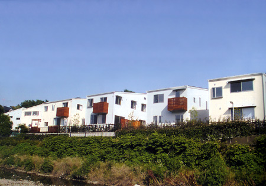
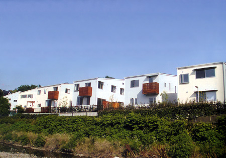

|
◇ コーポラティブヴィレッジ ｜ 自然・省エネ・安心の融合  |
| ■DATA | |
| 名称／ | 野川エコヴィレッジ Nogawa 9 cubes |
| 所在地／ | 東京都狛江市西野川4-38-29他 |
| 開発区域面積／ | 1,373m2 |
| 宅地面積／ | 1,080m2 |
| 区画数／ | 9区画 |
| 延床面積／ | 83m2～96m2 |
| 構造／ | 木造 |
| 階数／ | 地上2階 |
| 造成設計・監理／ | 都市デザインシステム |
| 建築設計・監理／ | 都市デザインシステム エステック計画研究所 東京電力建設部 |
| 造成施工／ | 村本建設 |
| 建物施工／ | 東日本ハウス |
| ■ CLOSED |